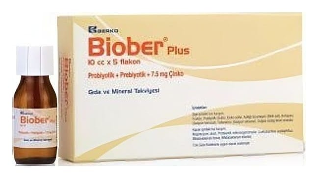

Biober-Zn Oral Süspansiyon İçeren Flakon, 5 Adet

Ne için kullanılır
KT · Bölüm 1 BİOBER-Zn, her bir flakonda (10 ml) 6,6 mg Bifidobakteriyum breve, 10 mg Bifidobakteriyum infantis, 14,2 mg Laktobasilus asidofilus ve 15 mg çinkoya eşdeğer 66 mg çinko sülfat heptahidrat içeren, çalkalandığında homojen görünümlü, opelesans, aromatik kokulu süspansiyondur. Her bir kutuda 10 ml’lik, pilfer-proof PE rezervuar kapak sistemi ile kapatılmış amber renkli, 5 adet PET flakon bulunmaktadır.
Virüs ve bakteri nedenli ishal ile spesifik olmayan ishallerin tedavisinde kullanılır.